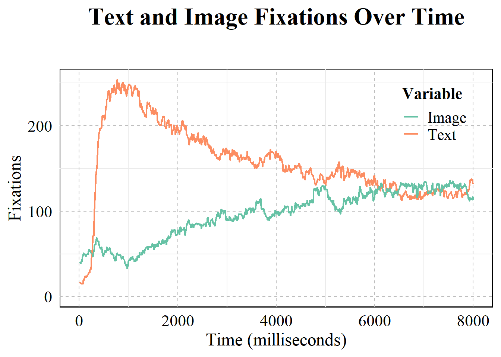

# Load required packages
#install.packages("ggplot2") # Install ggplot2 if not installed
library(ggplot2)
# Read data file
data <- read.csv("lldata1.csv")
options(repr.plot.width=10, repr.plot.height=6)
# Create line plot using ggplot function and add custom theme
ggplot(data, aes(x = Time)) +
geom_line(aes(y = Text, color = "Text"), size = 0.8) +
geom_line(aes(y = Image, color = "Image"), size = 0.8) +
labs(title = "Text and Image Fixations Over Time", x = "Time (milliseconds)", y = "Fixations", color = "Variable") +
scale_color_brewer(palette = "Set2") +
theme_minimal(base_size = 16) +
theme(
panel.background = element_rect(fill = "white"),
panel.grid.major = element_line(color = "gray", linetype = "dashed", size = 0.5),
axis.text = element_text(size = 16, color = "black", family = "serif", margin = margin(20, 20, 0, 0, unit = "pt")),
axis.title = element_text(size = 18, color = "black", family = "serif", margin = margin(20, 0, 20, 0, unit = "pt")),
plot.title = element_text(size = 24, face = "bold", hjust = 0.5, family = "serif", margin = margin(0, 0, 40, 0, unit = "pt")),
legend.position = c(0.95, 0.95),
legend.justification = c(1, 1),
legend.margin = margin(5, 5, 5, 5, unit = "pt"),
legend.title = element_text(size = 16, face = "bold", color = "black", family = "serif"),
legend.text = element_text(size = 16, color = "black", family = "serif")
) +
xlim(0, NA) +
ylim(0, NA)Warning: Using `size` aesthetic for lines was deprecated in ggplot2 3.4.0.
ℹ Please use `linewidth` instead.Warning: The `size` argument of `element_line()` is deprecated as of ggplot2 3.4.0.
ℹ Please use the `linewidth` argument instead.